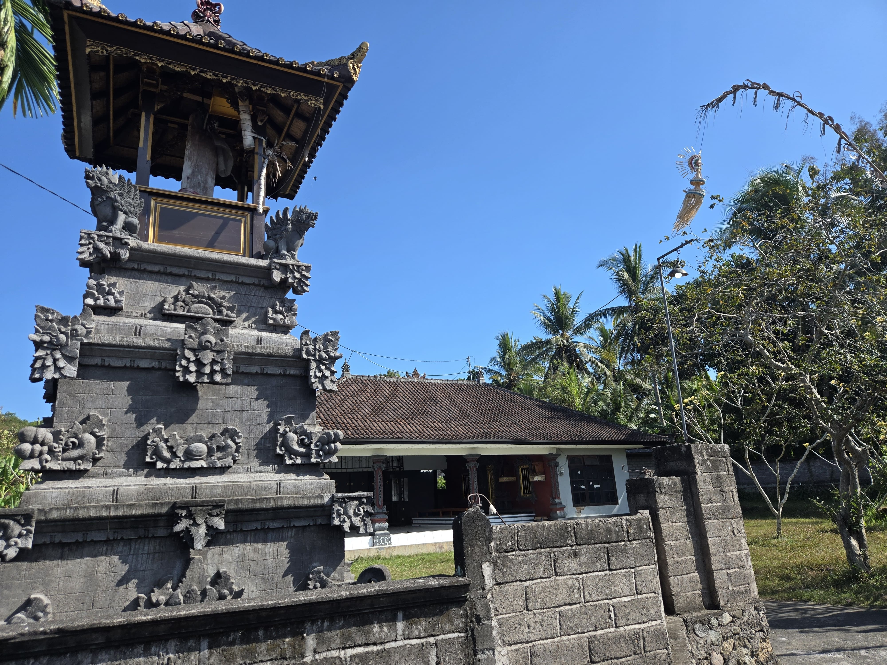

Selamat Datang di Peta Digital Desa Tukadaya
Halaman ini menyediakan akses digital terhadap peta Desa Tukadaya. Pilih peta yang ingin dilihat menggunakan tombol di bawah. Peta dapat diperbesar, diperkecil, digeser, dan ditampilkan dalam mode layar penuh.

Dokumen Peta
Unduh seluruh peta Desa Tukadaya dalam satu dokumen PDF yang terdiri dari dua peta.
Dokumen PDF berisi dua peta Desa Tukadaya dalam satu file.
Informasi Peta
Desa Tukadaya
Melaya
Jembrana
1 : 36.000
WGS 84 / Pseudo-Mercator
Badan Informasi Geospasial & Google Satellite
Lokasi yang Ditampilkan pada Peta
Beberapa fasilitas dan tempat yang ditampilkan pada peta Desa Tukadaya:

Kantor Perbekel Desa Tukadaya Koperasi Desa Merah Putih
Koperasi Desa Merah Putih
 Bale Banjar Munduk Ranti
Bale Banjar Munduk Ranti
 Bale Banjar Pangkung Jajang
Bale Banjar Pangkung Jajang
 Bale Banjar Berawantangi Taman
Bale Banjar Berawantangi Taman
 Pura Puseh Pakraman Tukadaya
Pura Puseh Pakraman Tukadaya
 Bale Banjar Berawantangi
Bale Banjar Berawantangi
 Bale Banjar Sarikuning Tulung Agung
Bale Banjar Sarikuning Tulung Agung
 Pura Puseh Pakraman Taman Sari
Pura Puseh Pakraman Taman Sari
 Pura Puseh Pakraman Berawantangi
Pura Puseh Pakraman Berawantangi
 Bale Banjar Sarikuning
Bale Banjar Sarikuning
 Bale Banjar Kembang Sari
Bale Banjar Kembang Sari
 Bale Banjar Sombang
Bale Banjar Sombang
Tentang Website
Website ini dikembangkan sebagai media informasi digital untuk melengkapi peta Desa Tukadaya dalam kegiatan KKN-PPM XXXIII Universitas Udayana 2026. Website menyediakan tampilan interaktif tiga peta Desa Tukadaya serta dokumen peta dalam format PDF yang dapat diakses dan diunduh oleh masyarakat.